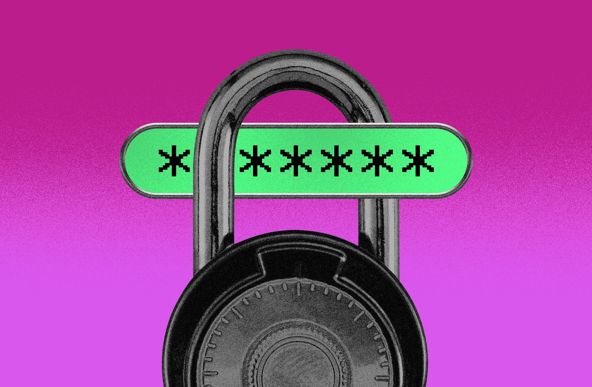

1Password представила платформу 1Password for Agents — «слой доверия» между личным ИИ-агентом и вашими учётными данными. Схема такая: агент доходит до страницы входа и останавливается, отправляя запрос на нужную учётную запись. Вам на устройство приходит уведомление — какой аккаунт и зачем нужен агенту. Одобряете (процесс похож на двухфакторную аутентификацию) — и 1Password сама автоподставляет логин и пароль прямо в форму сайта. Сам агент пароль не получает, не хранит и не видит: он лишь продолжает задачу уже авторизованным.
На старте интегрированы пять агентских платформ: Claude Duet от Anthropic, ChatGPT Work и dots от OpenAI, Grok Bot, Town (агент Townie) и Muse от Meta. В очереди — Browserbase, Browser Use, Dana, Instinct, Kernel, Perplexity, Ramp, Tomo и Wajo. «Агенты начинают выполнять за нас настоящую работу. Старая модель, где ты передаёшь учётные данные и надеешься на лучшее, больше не работает», — заявил старший директор по продукту 1Password Аашеш Трипати. Платформа анонсирована в тот же день, когда компания отчиталась о прохождении отметки в 500 млн долларов годовой подписки. Рост во многом дают именно разработчики и сборщики ИИ-агентов.
Мы не раз писали, как агенты сливали чужие кошельки, ключи и память вместе с промптом-обманкой. Главная дыра агентского интернета — учётки: сегодня пользователи то и дело вставляют пароли прямо в чат с ботом, а тот уносит их в контекст модели, чат-логи и сторонние плагины. 1Password переносит на персональные агенты ту же модель, что уже год работает в корпоративном секторе: секрет живёт в хранилище, агент получает только доступ через вас, а не сам секрет. Это практический ответ на риск prompt injection: даже если агента обманут промптом, украсть пароль он физически не сможет: максимум, что сделают, попросят вас подтвердить вход, а вы откажете.
Если пользуетесь 1Password и любым из поддерживаемых агентов — включите интеграцию и приучите себя читать уведомления о запросах входа: сверять, какой аккаунт и зачем запрашивают. Если пароль всё же светил в переписке с ИИ — смените его. И общее правило на все случаи: агенту давайте доступ к отдельному аккаунту с минимальными правами, а не к главному ящику с привязанной картой.